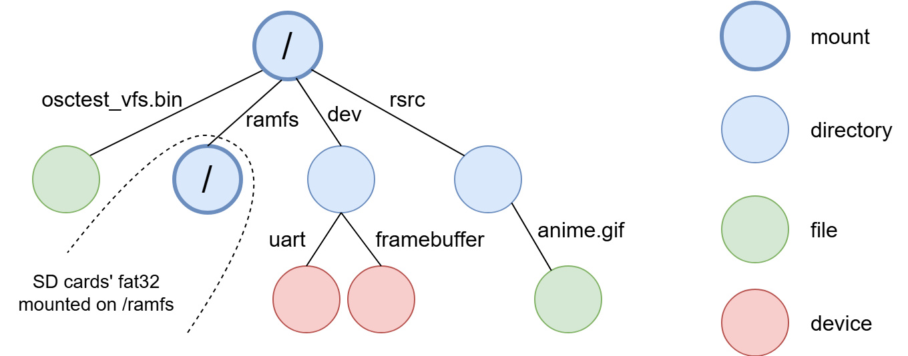
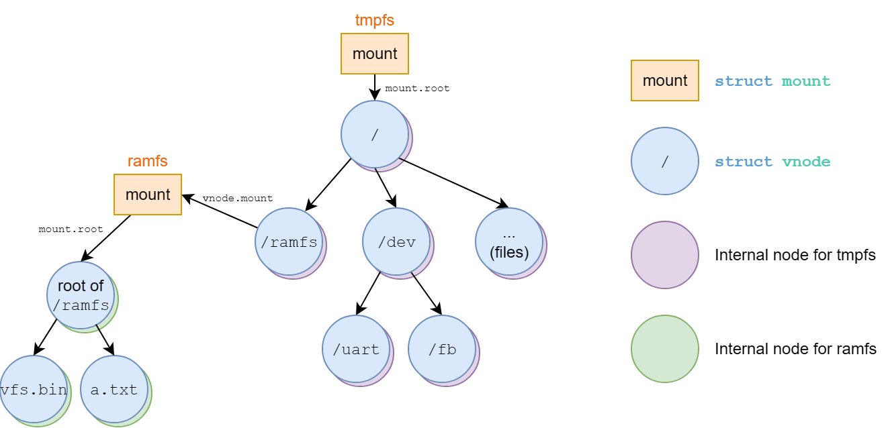

Lab 7: Virtual File System#
Warning
This document is currently under construction and may be incomplete or subject to significant changes. Please check back later for updates, and consult the instructor if you are unsure about any missing parts.
Introduction#
A file system manages data in storage mediums. Each file system has a specific way to store and retrieve the data. Hence, a virtual file system (VFS) is common in general-purpose OS, providing a unified interface for all file systems.
In this lab, you’ll implement a VFS interface for your kernel, and a memory-based file system (tmpfs) that mounts as the root file system, you’ll also implement special file for uart and framebuffer.
Goals of this lab#
Understand how VFS interface works.
Understand how to set up a root file system.
Understand how to operate on files.
Understand how to mount a file system and look up a file across file systems.
Understand how special file works.
Background#
Tree Structure#
A file system is usually hierarchical, and a tree is a suitable data structure to represent it.
Each node represents an entity such as a file or directory in the file system, and each edge has its name, which is stored in the directory.
Concatenating all the edges’ name on the path generates a pathname, which VFS can parse and traverse from one node to another.
Example graph:

Terminology#
File System#
In this documentation, a file system refers to a concrete file system type such as tmpfs, FAT32, etc. And the virtual file system will be shortened as VFS.
Vnode#
We call a node in a VFS tree a vnode, which is an abstract class that provides an unified interface, the underlying file systems should implement the methods and create the instance.
Component Name#
A pathname delimits each component name by ‘/’.
File Handle#
Files can be opened simultaneously. You should maintain a data structure that keeps information such as position of next R/W operation for each opened file. We call this data structure file handle.
Basic Exercises#
For basic exercises, you’ll need to create an VFS interface first.
We’ve provide an example code for you, and it’s up to you to re-design or modify the code.
Note
There’s no constraint on the design of VFS API, as long as there are no hard coded method for any file system (VFS is an generalize interface). But if you only finish Basic 1 & 2, please follow the API definition. Once you step into Basic 3, only syscall interface should be met the spec.
The following steps are just recommendations, you don’t have to follow them.
For tmpfs, you can assume that component name won’t excced 15 characters, and at most 16 entries for a directory. and at most 4096 bytes for a file.
For VFS the max pathname length is 255.
No need to support remove, rmdir, unlink …
For file descriptor, max open fd is 16, so fd < 16 if your fd number is reusable.
#define O_CREAT 00000100
struct vnode {
struct mount* mount;
struct vnode_operations* v_ops;
struct file_operations* f_ops;
void* internal;
};
// file handle
struct file {
struct vnode* vnode;
size_t f_pos; // RW position of this file handle
struct file_operations* f_ops;
int flags;
};
struct mount {
struct vnode* root;
struct filesystem* fs;
};
struct filesystem {
const char* name;
int (*setup_mount)(struct filesystem* fs, struct mount* mount);
};
struct file_operations {
int (*open)(struct vnode* file_node, struct file** target);
int (*close)(struct file* file);
int (*read)(struct file* file, void* buf, size_t len);
int (*write)(struct file* file, const void* buf, size_t len);
long (*lseek64)(struct file* file, long offset, int whence);
};
struct vnode_operations {
int (*lookup)(struct vnode* dir_node, struct vnode** target,
const char* component_name);
int (*create)(struct vnode* dir_node, struct vnode** target,
const char* component_name);
int (*mkdir)(struct vnode* dir_node, struct vnode** target,
const char* component_name);
};
struct mount* rootfs;
int register_filesystem(struct filesystem* fs) {
// register the file system to the kernel.
// you can also initialize memory pool of the file system here.
}
int vfs_open(const char* pathname, int flags, struct file** target) {
// 1. Lookup pathname
// 2. Create a new file handle for this vnode if found.
// 3. Create a new file if O_CREAT is specified in flags and vnode not found
// lookup error code shows if file exist or not or other error occurs
// 4. Return error code if fails
}
int vfs_close(struct file* file) {
// 1. Release the file handle
// 2. Return error code if fails
}
int vfs_write(struct file* file, const void* buf, size_t len) {
// 1. Write len byte from buf to the opened file.
// 2. Return written size or error code if an error occurs.
}
int vfs_read(struct file* file, void* buf, size_t len) {
// 1. Read min(len, readable size) byte to buf from the opened file.
// 2. Block if nothing to read for FIFO type.
// 3. Return read size or error code if an error occurs.
}
int vfs_mkdir(const char* pathname);
int vfs_mount(const char* target, const char* filesystem);
int vfs_lookup(const char* pathname, struct vnode** target);
...
The structure of this example code may be visualized as:

Basic Exercise 1 - Root File System - 15%#
In this part, you’ll need to implement tmpfs which follows the VFS interface, setup tmpfs as the root file system.
File System Registration#
Since each file system has its own initialization method, the VFS should provide interface for each file system to register. Then, users can mount the file system by specifying the name.
Mounting File System#
The provided code uses struct mount to represent a mounted
file system, VFS should provide an api for mounting a file
system to a mount point.
The root file system is at the top of the VFS tree, you should
mount tmpfs at rootfs, at this point, lookup might not be
available, you can call setup_mount directly to mount it.
Root directory’s vnode#
Each mounted file system has its own root vnode. You should create the root vnode during the mount setup.
The internal representation of each filesystem’s vnode may differ,
you can use vnode.internal to point to it.
Open Method#
It opens the vnode regardless of the underlying file system and
file type, and creates a file handle for the file. If O_CREAT is
set in flags, you should create the file if it doesn’t exist.
Close Method#
Close and release the file handle.
Read Method#
Given the file handle, VFS calls the corresponding read method
to read the file starting from f_pos, then updates f_pos after
read (or not if it’s a special file). The updated f_pos should point
to the end of the read data (similar to Linux’s behavior).
Note that f_pos should not exceed the file size. Once a file
read reaches the end of file (EOF), it should stop.
Returns size read or error code on error.
Write Method#
Given the file handle, VFS calls the corresponding write
method to write the file starting from f_pos, then updates
f_pos and size after write (or not if it’s a special file).
The updated f_pos should point to the end of the written data (similar to Linux’s behavior).
Returns size written or error code on error.
Lookup Method#
File system iterates through directory entries and compares the component name to find the target file. Then, it passes the file’s vnode to the VFS if it finds the file.
Create Method#
create an regular file on underlying file system, should fail if file exist. Then passes the file’s vnode back to VFS.
Todo
#define O_CREAT 00000100
int vfs_open(const char* pathname, int flags, struct file** target);
int vfs_close(struct file* file);
int vfs_write(struct file* file, const void* buf, size_t len);
int vfs_read(struct file* file, void* buf, size_t len);
Note: Once you finished Basic 3, you don’t have to meet the interfaces of this part.
Basic Exercise 2 - Multi-level VFS - 15%#
In this part, your VFS should be able to
create subdirectories
mount file systems on directories
look up a pathname
Mkdir Method#
Create a directory on underlying file system, same as creating a regular file.
Mounting Another File System#
Same as mounting the root file system, except you should be able to mount a filesystem on any vnode.
Pathname Lookup#
VFS api takes pathname as argument (absolute path "/" for now),
you need to lookup the pathname by traversing vnodes, starting
from root file system’s root vnode.
Also, the lookup should be able to cross mounting point. For mounted vnode, VFS should go to the mounted file system’s root vnode.
Here is the pseudo code, this code doesn’t show crossing of mount point or relative pathname.
int vfs_lookup(const char* pathname, struct vnode** target) {
auto vnode_itr = rootfs->root;
for (component_name : pathname) {
auto next_vnode;
auto ret = vnode_itr->v_ops->lookup(vnode_itr, next_vnode, component_name);
if(ret != 0) {
return ret;
}
vnode_itr = next_vnode;
}
*target = vnode_itr;
return 0;
}
Todo
int vfs_mkdir(const char* pathname);
int vfs_mount(const char* target, const char* filesystem);
The name of tmpfs is "tmpfs"
Note: Once you finished Basic 3, you don’t have to meet the interfaces of this part.
Basic Exercise 3 - Multitask VFS - 25%#
In this part, you need to implement
current working directory
file descriptor table
system calls for VFS
Current Working Directory#
Each task may have different current working directory and root directory, you need to keep that information in your task struct, and VFS should traverse vnode base on those information.
You’ll need to support relative path lookup ("", ".", and "..") and directory changing (chdir).
Path traversal should follow standard UNIX-like pathname resolution guidelines:
The special component
"."refers to the current directory, and".."refers to the parent directory.Path resolution must remain robust at boundary conditions. For instance, the parent of the root directory
"/"is still the root directory"/"itself, and resolving".."at the root of a mounted filesystem should correctly cross the mount boundary back into the parent filesystem’s directory hierarchy.Pathname strings should be normalized correctly during parsing. Consecutive directory separators (e.g., multiple slashes) should be collapsed and treated as a single slash.
File Descriptor Table#
Each process should have a file descriptor table to bookkeep the opened files. When the user opens a file, the kernel creates a file handle in the table and returns the index (file descriptor) to the user. After that, the user can pass the file descriptor to the kernel to get the file handle. Then, the kernel calls the corresponding VFS API using the file handle and return the result to the user.
System Calls for VFS#
You’ll need to provide the following system calls. Each system call must map to the designated syscall number and behave according to the details below:
open#
#define O_CREAT 00000100
int open(const char *pathname, int flags);
Syscall Number: 14
Description: Opens the file specified by
pathname.Parameters:
pathname: The path to the file. It can be an absolute path (starting with/) or a relative path (relative to the current working directory).flags: Options for opening the file. You must supportO_CREAT(octal00000100). IfO_CREATis specified and the file does not exist, it should be created as a regular file.
Return Value: Returns the newly allocated file descriptor (a non-negative integer representing the index in the process’s file descriptor table) on success, or a negative error code on failure.
close#
int close(int fd);
Syscall Number: 15
Description: Closes the file descriptor
fd, releasing the associated file handle and freeing the descriptor slot.Parameters:
fd: The file descriptor to close.
Return Value: Returns
0on success, or a negative error code on failure (e.g., if the file descriptor is invalid or not open).
read#
long read(int fd, void *buf, unsigned long count);
Syscall Number: 16
Description: Reads up to
countbytes from the file referenced byfdinto the bufferbuf. Updates the file handle’s read/write position (f_pos) by the number of bytes read.Parameters:
fd: The file descriptor of the open file to read from.buf: The buffer to store the read data.count: The maximum number of bytes to read.
Return Value: Returns the number of bytes successfully read (0 indicates EOF), or a negative error code on failure.
write#
long write(int fd, const void *buf, unsigned long count);
Syscall Number: 17
Description: Writes up to
countbytes from the bufferbufto the file referenced byfd. Updates the file handle’s read/write position (f_pos) by the number of bytes written.Parameters:
fd: The file descriptor of the open file to write to.buf: The buffer containing the data to be written.count: The maximum number of bytes to write.
Return Value: Returns the number of bytes successfully written on success, or a negative error code on failure (e.g., if fd is invalid, it is a read-only file system).
mkdir#
int mkdir(const char *pathname, unsigned mode);
Syscall Number: 18
Description: Creates a new directory specified by
pathname.Parameters:
pathname: The path to the new directory.mode: The permission mode for the directory. You can ignoremodesince there is no access control in this lab.
Return Value: Returns
0on success, or a negative error code on failure.
mount#
int mount(const char *src, const char *target, const char *filesystem, unsigned long flags, const void *data);
Syscall Number: 19
Description: Mounts a filesystem specified by its name on the directory specified by
target.Parameters:
src: The source device/path. This can be ignored for this lab.target: The directory path where the filesystem will be mounted.filesystem: The name of the filesystem type to mount (e.g.,"tmpfs").flagsanddata: Additional flags and filesystem-specific mount options. These can be ignored for this lab.
Return Value: Returns
0on success, or a negative error code on failure.
chdir#
int chdir(const char *path);
Syscall Number: 20
Description: Changes the current working directory of the process to the directory specified by
path.Parameters:
path: The target directory path to change to.
Return Value: Returns
0on success, or a negative error code on failure.
Todo
Support relative path lookup,
"",".","..".Support current working directory, change directory.
Implement file descriptor table.
Finish the above syscalls.
Note
Please meet the interface specified, including the return value, since we may check the return value. Also remember to return negative error code on failure (the value is up to you).
f_posis consistent for the same file descriptor.Ensure the robustness of your implementation.
Basic Exercise 4 - /ramfs - 15%#
In this part, you need to make ramfs as an read only
file system which follows the VFS interface, and mount
on "/ramfs".
You might need to create supporting data structure for
ramfs at registration (or mount), then create directory
"/ramfs" on root file system, then mount on it.
All method like write, create, mkdir, should fail on this file system.
Todo
Create ramfs, and mount it on
/ramfs.Ramfs should be read only.
Advanced Exercises#
Special File#
A file in VFS can also represent a device.
In order to create a special file, the normal way is to use mknod,
which creates a special file with specified device driver,
and file_operations points to driver’s method.
Device File Registration#
A device can register itself to the VFS in its setup. The VFS assigns the device a unique device id. Then the device can be recognized by the VFS.
Mknod#
A user can use the device id to create a device file in a file system.
After the device file created, the VFS uses the device id to find the device driver. Next, the driver initializes the file with its method. Then, the user can read/write the file to access the device.
mkdir
"/dev"mknod
"/dev/uart"mknod
"/dev/fb"
Alternative#
There’s also other way to hack this (which is weird, but it works). As long as it’s not hard coded on VFS, and it works fine with VFS api.
Creat devfs, which have hard coded device file, and mount on
"/dev"mkdir
"/dev"mount
"devfs"on"/dev"
Creat uartfs and mount on
"/dev/uart"mkdir
"/dev"mkdir
"/dev/uart"mount
"uartfs"on"/dev/uart"mkdir
"/dev/fb"mount
"framebufferfs"on"/dev/fb"
Advanced Exercises 1 - /dev/uart - 15%#
You need to create a device file at "/dev/uart" for your UART
device as the console. R/W to this file is same as
uartread / uartwrite.
You also need to open this file as stdin (fd=0), stdout (fd=1),
and stderr (fd=2), for user process
// there should be output on terminal
write(1, "hello world\n", 12);
Todo
Implement device file setting.
Implement one device file
/dev/uart.
Advanced Exercises 2 - /dev/fb - 20%#
In previous labs, we displayed images/video by writing to the framebuffer memory address directly. Which means a hardcoded address or a specific display system call is needed.
In this part, we convert it to a special write-only device at "/dev/fb",
which allows the user process to configure and draw to the screen via standard VFS interfaces.
If you are using QEMU, you need to initialize the framebuffer first using QEMU’s fw_cfg DMA interface
at mknod (or mount or ioctl, we don’t care). And if on Orange Pi, it doesn’t need to do anything,
like previous lab. When written, the driver writes directly to the framebuffer lfb + f_pos and flushes
the data cache if needed. lfb is the base address of the framebuffer.
System Call Specification#
You also need to support lseek64 system call (to write framebuffer
again without reopen) and ioctl system call (to query framebuffer
info), which are also VFS api using underlying method.
lseek64#
#define SEEK_SET 0
long lseek64(int fd, long offset, int whence);
Syscall Number: 21
Description: Repositions the read/write file offset of the open file associated with the file descriptor
fdto the argumentoffsetaccording to the directivewhence.Parameters:
fd: The file descriptor of the open file.offset: The offset in bytes relative towhence.whence: The method of positioning. You only need to implementSEEK_SET(value0).
Return Value: Returns the resulting offset location as measured in bytes from the beginning of the file on success, or a negative error code on failure.
ioctl#
int ioctl(int fd, unsigned long request, ...);
Syscall Number: 22
Description: Manipulates the underlying device parameters of special files.
Parameters:
fd: The file descriptor of the open device file.request: The device-dependent request code. For framebuffer, request0(orFB_IOCTL_GET_INFO) is used to get the framebuffer info....: A pointer to the structure to receive the device information (e.g.,struct framebuffer_info). Remember to translate the userspace address to kernel space.
Return Value: Returns
0on success, or a negative error code on failure.
The following is the simplified code in test program:
#define FB_IOCTL_GET_INFO 0
int fd = open("/dev/fb", 0);
struct framebuffer_info {
unsigned int width;
unsigned int height;
unsigned int bpp; // byte per pixel
};
struct framebuffer_info fb;
ioctl(fd, FB_IOCTL_GET_INFO, &fb)
while(1) {
...
lseek64(fd, offset, SEEK_SET);
...
write(fd, color, fb.bpp);
...
}
Todo
Implement /dev/fb and play the video via vfs_fork.
Test#
If you manage to complete basic3, put this user program in initramfs.cpio.
When entering your kernel, run exec vfs.bin to run the user program.
vfs_fork will validate framebuffer, and vfs will validate the rest.
If not, TAs will provide some functions (VFS API) to test during demo. (Only for those who just finish Basic 1 and 2)
Note
There will be some hidden test cases in the demo, so please ensure the robustness of your implementation. If these hidden cases fail, you may receive some score deductions.